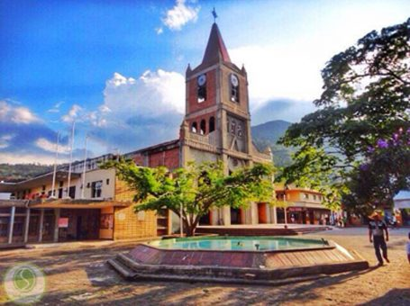
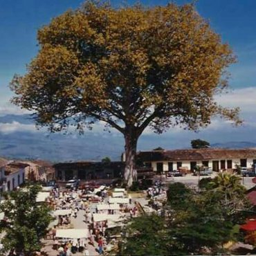

HISTORIA DEL MUNICIPIO:
Valparaíso era tierra indígena. En sus comienzos estuvo habitada por tribus de nombre Caramanto, derivadas de la gran familia de los catíos, las cuales huyeron de estas comarcas del suroeste de Antioquia bajo el fuego de los conquistadores. Más precisamente su primeros pobladores fueron tribus Cartama, descendientes de los citados Caramanto. Estas tribus, todas al parecer, guerreros y no guerreros, abandonaron el territorio a la llegada de los españoles. Un poco antes de 1864, el pequeño caserío situado en esta comarca había recibido el nombre de El Hatillo. Poco más adelante, José María Ochoa rebautizó el poblado con el nombre actual, Valparaíso, en memoria de la ciudad chilena de igual nombre. Aquel año, la Asamblea de Antioquia crea el municipio con la misma denominación.
 